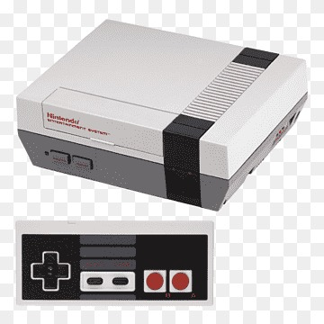
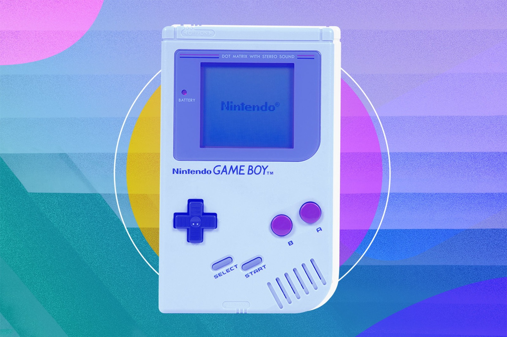
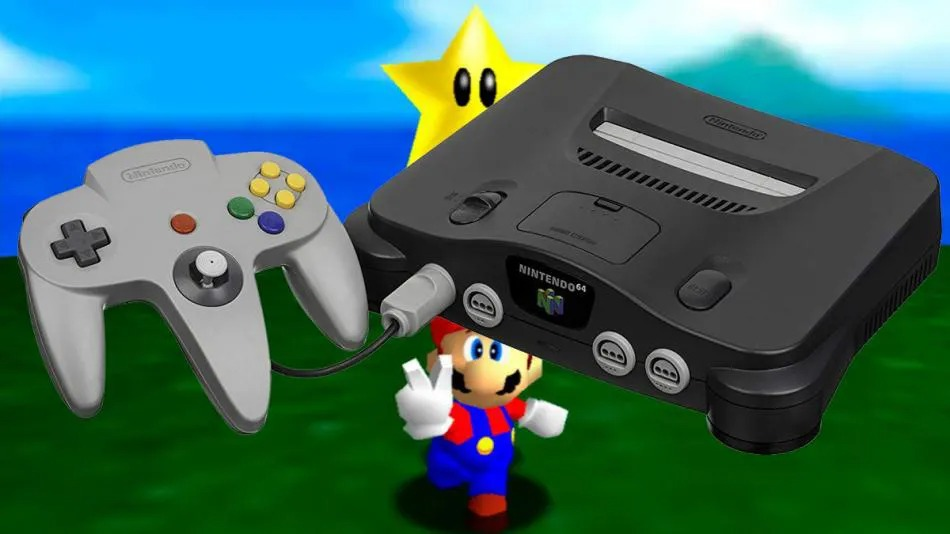
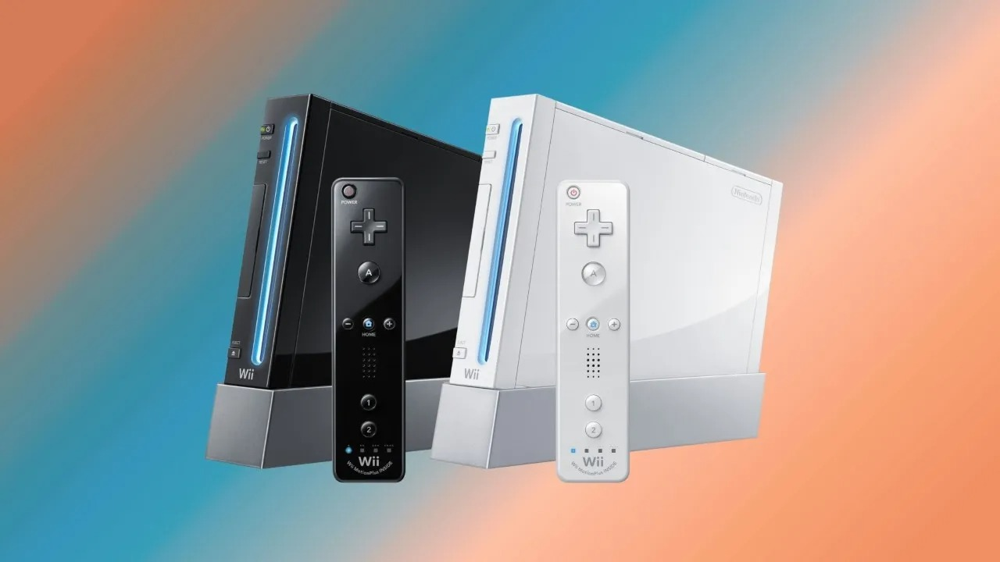

DESCRIPCIÓN: consola de 8 bits (tercera generación) desarrollada por Nintendo. Salió a la venta en Japón,
Norteamérica, Europa y Australia durante finales de los años 80.

GAME BOY
FECHA DE LANZAMIENTO: 1989
UNIDADES VENDIDAS: 118 mill.
DESCRIPCIÓN: Videoconsola portátil desarrollada y comercializada por Nintendo, lanzada por primera vez en
Japón y América del Norte en 1989, y en Europa un año después. Perteneció a la línea de consolas Game Boy,
siendo esta la primera de la serie.

NINTENDO 64
FECHA DE LANZAMIENTO: 1996
UNIDADES VENDIDAS: 32 mill.
DESCRIPCIÓN: Desarrollada para suceder a la Super Nintendo. Fue la primera consola concebida para dar el
salto del 2D al 3D.

NINTENDO GAMECUBE
FECHA DE LANZAMIENTO: 2001
UNIDADES VENDIDAS: 21 mill.
DESCRIPCIÓN: Es una consola de videojuegos en formato cúbico. El procesador especialmente optimizado de 485
MHz con alta tecnología de semiconductores de cobre, se complementa con un hardware que rompe los límites
entre el mundo real y el videojuego.
NINTENDO DS
FECHA DE LANZAMIENTO: 2004
UNIDADES VENDIDAS: 154 mill.
DESCRIPCIÓN: Es una consola portátil de Nintendo. Con sus dos pantallas, una de ellas táctil, acercó a todo
un nuevo grupo de gente al mundo de los videojuegos. A lo largo de los años han salido al mercado varios
modelos diferentes de Nintendo DS.
NINTENDO WII
FECHA DE LANZAMIENTO: 2006
UNIDADES VENDIDAS: 101 mill.
DESCRIPCIÓN: Es una consola doméstica de Nintendo. Se lanzó en 2006 e introdujo el juego con control por
movimiento para una amplia audiencia de fans de Nintendo y también para gente que no eran los tradicionales
jugadores de videojuegos.

NINTENDO SWITCH
FECHA DE LANZAMIENTO: 2017
UNIDADES VENDIDAS: 104 mill.
DESCRIPCIÓN: Es una consola de videojuegos desarrollada por Nintendo. Conocida en el desarrollo por su nombre
código «NX», se dio a conocer en octubre de 2016 y fue lanzada mundialmente el 3 de marzo de 2017. Nintendo
considera a Switch una consola híbrida.